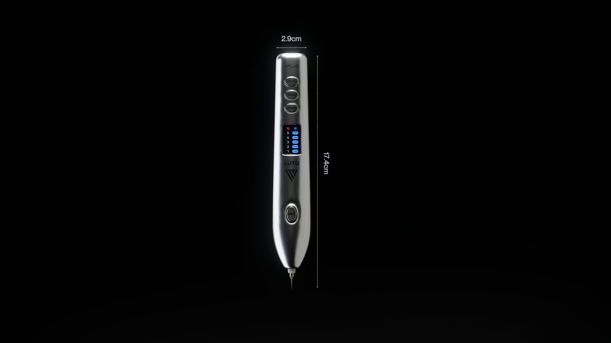

Báo giá dựng 3D sản phẩm: tính theo gì, cần gửi gì
Báo giá dựng 3D sản phẩm không có một con số chung, vì nó được bóc theo bốn thứ đo được: số hình phải giao, độ phức tạp của món hàng, mức hoàn thiện của hình cuối, và số vòng sửa hai bên chấp nhận trước khi dừng. Ai đưa ra con số ngay sau khi nghe tên sản phẩm là đang đoán, và phần đoán đó luôn được cộng vào giá bạn trả.
Bài này viết cho người sắp đi hỏi giá: cách một báo giá dựng hình 3D được bóc ra thành hạng mục, bạn cần gửi gì để nhận một con số có cơ sở, vì sao hai nơi báo lệch nhau nhiều lần, chỗ nào cắt được chi phí và chỗ nào cắt vào là hỏng việc. Chúng tôi không nêu con số cho một món cụ thể, vì giá đổi theo từng trường hợp, nhưng sẽ nói thật các thành phần tạo nên nó.
Báo giá dựng 3D sản phẩm được bóc theo những phần nào
Một báo giá đáng tin gần như luôn tách ít nhất hai khối: tiền dựng món hàng, trả một lần, và tiền cho từng hình giao. Hiểu đúng hai khối này là bạn đã đọc được phần lớn báo giá.
Số hình giao và tỉ lệ khung
Một góc chính diện nền trắng khác hẳn năm góc có bối cảnh, và cùng một góc xuất ba tỉ lệ khung cho website, sàn thương mại điện tử và bài đăng dọc thì vẫn là ba lần dựng bố cục, không phải một. Hãy đếm số ảnh thật sự sẽ dùng, kèm nơi nó xuất hiện, trước khi hỏi giá.
Độ phức tạp của món hàng
Một hủ kem hình trụ có nhãn dán là một mức công việc. Một thiết bị có khứa, lưới thông hơi, chữ nổi, cảm ứng và phần lắp ghép là mức khác hẳn. Chi tiết nhỏ lại là chỗ tốn thời gian nhất, vì mắt người nhìn vào đó để quyết định hình thật hay giả.
Mức hoàn thiện của hình cuối
Hình để duyệt nội bộ, hình cho trang bán hàng, và hình làm key visual chính của một chiến dịch là ba mức yêu cầu khác nhau về ánh sáng, về độ sạch bề mặt và về thời gian hậu kỳ. Nói rõ mức bạn cần giúp bên nhận việc không báo theo mức cao nhất cho an toàn.
Số vòng sửa đã bao gồm
Đây là dòng hay bị bỏ trống và cũng là dòng gây tranh chấp nhiều nhất. Hai vòng sửa cho mỗi góc là mức thông thường, và đi kèm một định nghĩa rõ ràng về thứ gì tính là sửa, thứ gì tính là việc mới.
Bốn dạng việc hay bị gộp vào cùng một câu hỏi giá
Phần lớn các cuộc hỏi giá bắt đầu bằng một câu chung: dựng 3D món này bao nhiêu. Nhưng bốn dạng dưới đây có khối lượng khác nhau rất xa, nên câu trả lời cũng khác.
| Dạng việc | Việc chính | Khối lượng tương đối | Phù hợp khi |
|---|---|---|---|
| Ảnh nền trắng | Dựng món, đèn sạch, nhiều góc | Thấp nhất trên mỗi ảnh | Cần bộ ảnh cho sàn và website |
| Ảnh có bối cảnh | Thêm tiểu cảnh, vật liệu, đèn theo câu chuyện | Trung bình tới cao | Cần hình truyền thông, hình mùa vụ |
| Hình cắt lớp và chú thích | Tách linh kiện, dựng phần bên trong | Cao, phụ thuộc bản vẽ | Giải thích công nghệ, hồ sơ kỹ thuật |
| Clip ngắn hoặc TVC | Thêm chuyển động, nhịp cắt, âm thanh | Nhảy bậc so với ảnh tĩnh | Cần vài giây cho quảng cáo |
Dòng cuối cần đọc thật kỹ. Một clip sáu giây không bằng sáu ảnh tĩnh, vì mỗi giây là hai mươi bốn tới ba mươi khung và mọi sai sót nhỏ ở vật liệu đều bị nhân lên theo thời lượng. Các mốc duyệt của một shot động nằm trong bài quy trình dựng TVC 3D, còn phần giao nhận của nhóm ảnh tĩnh được viết kỹ hơn trong bài dịch vụ render 3D sản phẩm.
Bạn cần gửi gì để nhận báo giá có cơ sở
Gửi thiếu đầu vào thì bên nhận việc buộc phải báo theo trường hợp xấu nhất, và bạn là người trả phần dự phòng đó. Dưới đây là bộ tối thiểu chúng tôi hỏi trước khi báo lại một con số.
- Bản vẽ kỹ thuật hoặc số đo ba chiều của món hàng, ở định dạng bất kỳ bên bạn đang có, kể cả ảnh chụp bản vẽ giấy.
- Ảnh chụp món thật từ sáu hướng, cộng ảnh cận các chi tiết nhỏ như nút, khứa, đường ghép.
- File bao bì và nhãn ở dạng vector, kèm mã màu in và font.
- Danh sách ảnh cần giao, ghi rõ tỉ lệ khung và nơi mỗi ảnh sẽ xuất hiện.
- Một câu nói rõ hình dùng để duyệt nội bộ, để bán hàng, hay để làm key visual.
- Ba tới năm ảnh tham chiếu phong cách, kèm một câu nói rõ bạn thích điểm nào ở mỗi ảnh.
- Số phiên bản màu hoặc số dung tích của cùng dòng sản phẩm, nếu có.
- Mốc thời gian thật, gồm cả ngày duyệt nội bộ chứ không chỉ ngày chạy chiến dịch.
- Ai là người duyệt cuối, và có bao nhiêu người có quyền yêu cầu sửa.
Dòng cuối trông như chuyện hành chính nhưng ảnh hưởng tới giá nhiều hơn người ta tưởng. Một người duyệt và năm người duyệt là hai khối lượng sửa khác nhau.

Vì sao hai nơi báo giá lệch nhau nhiều lần
Khi hai báo giá cho cùng một món lệch nhau gấp mấy lần, lý do thường không nằm ở đơn giá. Nó nằm ở bốn chỗ sau.
Hai bên đang đếm số hình khác nhau. Một bên hiểu là ba góc, bên kia hiểu là ba góc nhân ba tỉ lệ khung. Cách chữa là gửi đúng một danh sách ảnh cho mọi nơi bạn hỏi.
Mức hoàn thiện được hiểu khác nhau. Ảnh đủ dùng cho trang bán hàng và ảnh làm key visual đứng đầu một chiến dịch cách nhau khá xa ở khâu ánh sáng và hậu kỳ.
Số vòng sửa không được ghi. Báo giá thấp thường đã ngầm cắt phần này xuống một vòng, và phần còn lại sẽ quay về dạng phí phát sinh.
Quyền sử dụng và file gốc không đồng nhất. Giao ảnh cuối khác với giao kèm file dựng để bạn tái sử dụng về sau. Hỏi rõ ngay từ đầu, vì đòi sau khi đã chốt giá là rất khó.
Một báo giá rẻ hơn chưa chắc là rẻ. Phần lớn trường hợp nó đang mô tả một khối lượng nhỏ hơn, và phần thiếu sẽ xuất hiện lại ở giữa dự án với một cái tên khác.
Khoảng lệch giữa freelancer, studio và agency cũng nằm ở nhóm nguyên nhân này nhiều hơn là ở tay nghề. Cách so ba nhóm đó trên cùng một bảng được viết trong bài studio 3D là gì và chọn thế nào, phần so trong nước với nước ngoài nằm ở bài studio 3D tại Việt Nam, còn nếu việc của bạn là một chương trình chứ không phải một món hàng thì bài phối cảnh sự kiện 3D đi đúng vào nhóm đó.
Chỗ cắt được chi phí và chỗ không nên cắt
Ngân sách có hạn là chuyện bình thường. Vấn đề là cắt đúng chỗ thì hình vẫn dùng được, cắt sai chỗ thì phải làm lại.
Ba chỗ cắt được
- Giảm số góc ở vòng đầu, giữ lại mô hình để thêm góc sau khi hình đầu chứng minh được hiệu quả.
- Thay bối cảnh phức tạp bằng nền đơn sắc có đèn tốt, nhóm ảnh này sống lâu hơn và đỡ lỗi thời.
- Tự chuẩn bị đầu vào cho đủ và gọn, vì phần thời gian bên nhận việc phải bỏ ra để đoán đều nằm trong giá.
Ba chỗ không nên cắt
- Số vòng sửa. Cắt xuống một vòng thường đổi thành phí phát sinh hoặc thành một bộ hình không ai hài lòng.
- Độ chính xác của hình so với món thật. Hình đẹp hơn hàng thật là đường ngắn dẫn tới đổi trả và mất lòng tin.
- Khâu chốt màu với mẫu in thật, nếu bao bì là phần nhận diện chính của sản phẩm.
Nếu bạn ra hình thường xuyên, có một hướng thứ ba đáng tính: giữ một người trong nhà làm được phần dựng khối và các ảnh nền trắng, còn thuê ngoài phần key visual. Đầu ra cụ thể của hướng này được liệt kê trong bài khoá học dựng hình sản phẩm, phần máy móc cần cho người làm trong nhà được bóc theo giai đoạn trong bài cấu hình máy học Blender để không mua thừa ngay từ đầu, và phần danh mục dịch vụ chúng tôi đang nhận nằm ở trang dịch vụ 3D cho thương hiệu.
Dấu hiệu một báo giá chưa đáng tin
Không phải dấu hiệu nào cũng là lỗi cố ý. Phần lớn chỉ là báo vội. Nhưng gặp những điểm này thì bạn nên hỏi thêm trước khi chốt.
- Báo một con số duy nhất, không tách phần dựng món và phần từng ảnh.
- Không hỏi bản vẽ, không hỏi số đo, không hỏi nơi ảnh sẽ dùng.
- Không ghi số vòng sửa, hoặc ghi sửa không giới hạn, vì điều đó không tồn tại trên thực tế.
- Cam kết tiến độ rất ngắn trước khi xem đầu vào.
- Portfolio chỉ có ảnh cuối, không có bất kỳ dấu vết nào của quy trình và các vòng duyệt.
- Không nói gì về quyền sử dụng hình và việc có giao file gốc hay không.
Ở chiều ngược lại, cũng nên nói thật một điều: người hỏi giá mang theo một danh sách ảnh rõ ràng và một mốc thời gian thật luôn nhận được báo giá tốt hơn. Không phải vì được ưu đãi, mà vì bên nhận việc không còn phải cộng phần rủi ro vào con số.
Muốn xem chúng tôi giao những gì trong thực tế trước khi hỏi giá thì các bộ ở trang dự án render 3D sản phẩm là chỗ nên bắt đầu, trong đó bộ hình khoá cửa thông minh là ví dụ của một món nhiều linh kiện cần cả ảnh nền trắng và hình cắt lớp.
Câu hỏi thường gặp về báo giá dựng 3D sản phẩm
Báo giá dựng 3D sản phẩm thường tính theo hình hay theo sản phẩm?
Phổ biến nhất là tính theo hai phần cộng lại: một phần cho việc dựng món hàng, trả một lần vì mô hình dùng lại được cho mọi góc, và một phần cho từng hình giao. Vì vậy ảnh thứ nhất luôn đắt nhất và ảnh thứ năm rẻ hơn nhiều. Một báo giá chỉ đưa một con số gọn cho cả gói thì bạn nên hỏi tách hai phần này ra.
Chưa có bản vẽ kỹ thuật thì có báo giá được không?
Được, nhưng con số sẽ rộng hơn và thường kèm phần dự phòng. Thay cho bản vẽ, bạn gửi ảnh chụp món thật từ sáu hướng kèm số đo ba chiều và ảnh cận các chi tiết nhỏ. Ảnh điện thoại là đủ, miễn là thấy rõ đường nối giữa các mảng và chất liệu bề mặt.
Vì sao hai nơi báo giá lệch nhau nhiều lần cho cùng một món?
Thường vì hai báo giá đang nói về hai khối lượng khác nhau chứ không phải hai mức giá khác nhau. Một bên tính ba góc nền trắng với một vòng sửa, bên kia tính năm góc có bối cảnh, ba vòng sửa và giao kèm file gốc. Muốn so được thì phải đặt hai báo giá trên cùng một danh sách hạng mục.
Giá dựng 3D rẻ hơn chụp ảnh thật không?
Không phải luôn. Một món hàng đã có sản phẩm mẫu trong tay, chỉ cần vài ảnh nền trắng thì chụp thật thường nhanh và rẻ hơn. Dựng 3D thắng ở nhóm việc khác: món chưa sản xuất, cần nhiều phiên bản màu, cần hình cắt lộ bên trong, hoặc cần dùng lại mô hình cho nhiều chiến dịch sau đó.
Thỏa thuận về số vòng sửa nên ghi thế nào?
Ghi rõ bao nhiêu vòng, mỗi vòng gồm những gì, và việc gì tính là việc mới. Sửa màu, sửa cường độ đèn và sửa bố cục nhỏ nền nằm trong vòng sửa. Đổi góc camera, thêm phiên bản bao bì hay đổi thiết kế sản phẩm là việc mới. Không ghi ra thì chính chỗ này là nơi hai bên mất lòng nhau.
Nếu bạn đang cần một con số cho món của mình, gửi cho chúng tôi bản vẽ hoặc ảnh mẫu kèm danh sách ảnh cần giao và nơi ảnh sẽ xuất hiện. Chúng tôi báo lại theo từng hạng mục thay vì một con số gọn, và nói thẳng nếu chụp thật là lựa chọn hợp hơn cho trường hợp của bạn. Còn nếu bạn muốn tự làm được phần này, hai hệ ở trang khoá học 3D Blender ghi rõ đầu ra từng tuần, và cẩm nang học Blender nói thật những việc một người mới làm được và chưa nên nhận.
Đọc tiếp
Muốn được sửa bài trực tiếp?
Coaching 1:1 online, đồng hành trọn một năm. Để lại thông tin, tôi xem qua và tư vấn bạn nên bắt đầu từ đâu.
Đăng ký tư vấn